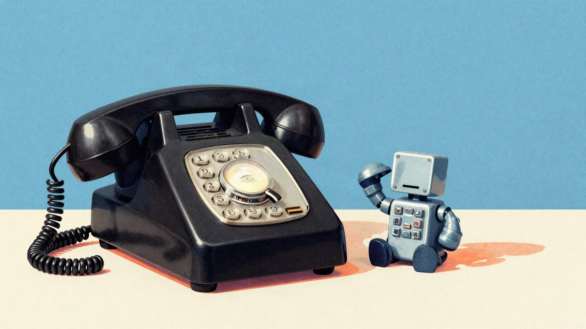

Science Corporation je prikupio 400 milijuna dolara, tvrtka vrijedi 3,5 milijardi

Startup Science Corporation, koji je osnovao Max Hodak, bivši predsjednik Neuralinka, zatvorio je Series D rundu od 400 milijuna dolara. Prema neimenovanom izvoru, tvrtka vrijedi 3,5 milijardi dolara. Implantat PRIMA za vraćanje dijela vida odobren je u Europi i dostupan u Njemačkoj, a novac se koristi i za put prema američkom tržištu.
Science Corporation, medicinski tehnološki startup koji je 2021. osnovao Max Hodak, bivši predsjednik Neuralinka, zatvorio je Series D rundu od 400 milijuna dolara. Prema neimenovanom izvoru upoznatom s dogovorom, investitori su Science vrednovali na 3,5 milijardi dolara. Rundu je Science objavio na svom blogu.
U rundi su sudjelovali Khosla Ventures, Ackman Oxman Institute, Tenet Healthcare, 885 Capital, Y Combinator i PLC Neurotech.
PRIMA je već u Europi
Prvi proizvod Sciencea je PRIMA, nosivi i implantabilni čip koji ljudima s makularnom degeneracijom povezanom sa starenjem pomaže vratiti dio vida. Odobren je u Europi i dostupan u Njemačkoj, a ispituje se i za nova stanja. Hodak je na konferenciji TechCrunch Disrupt najavio da se PRIMA sada testira i na pacijentima sa Stargardtovom bolešću, drugim stanjem koje uzrokuje sljepoću.
Put prema američkom tržištu
Novcem iz runde Science želi PRIMA-u dovesti u SAD kroz FDA-ov program Humanitarian Device Exemption, koji omogućuje primjenu eksperimentalne medicinske tehnologije kod rijetkih stanja. Science je uvjerio FDA da je uznapredovala makularna degeneracija na oba oka dovoljno rijetka da može zatražiti odobrenje za primjenu uređaja u SAD-u.
Veliki cilj: izravna veza s mozgom
Osnovna ambicija Sciencea ipak je izravno povezivanje s ljudskim mozgom putem bio-hibridnog senzora, izrađenog od uzgojenih neurona i silicija. Science trenutno s Muratom Günelom, profesorom neurokirurgije na Yaleu, osmišljava prva ispitivanja tog uređaja na ljudima. Günel je za TechCrunch rekao da bi uređaj mogao omogućiti terapije za Parkinsonovu bolest i druge ozljede i bolesti mozga.
Hodak se biotehnologijom bavi još od studija, kada je uspio doći u laboratorij za neuroznanost na diplomskoj razini. Science je osnovao kako bi nove tehnologije iskoristio za razumijevanje mozga i interakciju s njim.
Izvor: TechCrunch AI
Povezani članci
 Mercor vrijedi oko 18 milijardi eura, a svaki od trojice osnivača ima oko 3,9 milijardi eura imovine12. studenoga 2026.
Mercor vrijedi oko 18 milijardi eura, a svaki od trojice osnivača ima oko 3,9 milijardi eura imovine12. studenoga 2026. SAD su zaustavile sve domaće letove više od četiri sata: otkazano preko 5.100 letova, Duffy traži 50 milijardi dolara13. studenoga 2026.
SAD su zaustavile sve domaće letove više od četiri sata: otkazano preko 5.100 letova, Duffy traži 50 milijardi dolara13. studenoga 2026.
Australski Apate je pustio 350.000 AI agenata da zamaraju prevarante, 250.000 obavijesti za banke i operatere7. studenoga 2026.